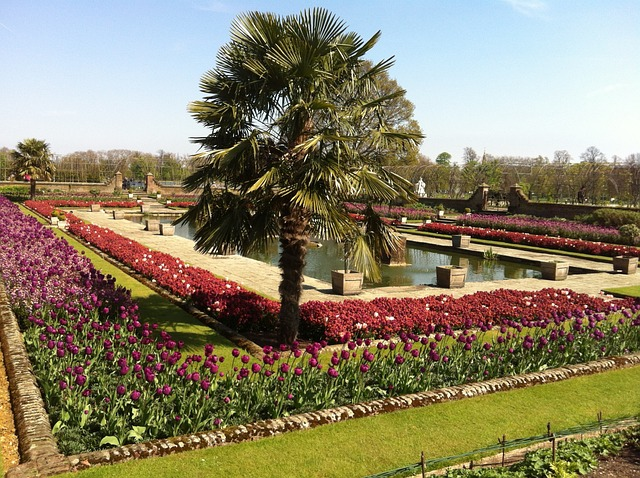

Kensington Gardens
Los Kensington Gardens son un parque real de 111 hectáreas situado en el barrio de Kensington, en Londres. Es uno de los parques más antiguos de la ciudad, con una historia que se remonta al siglo XVII. Los jardines son famosos por sus hermosas flores y su arquitectura paisajística, y son una atracción turística muy popular, con más de 13 millones de visitantes anuales.
Los Kensington Gardens están llenos de lugares para explorar, desde el monumento de Albert Memorial hasta la famosa estatua de Peter Pan. También cuenta con varias atracciones en su interior, como el Palacio de Kensington, residencia oficial de la familia real británica, y el Serpentine Gallery, un espacio de arte moderno que alberga exposiciones de renombre.
Además de sus atracciones y belleza natural, los Kensington Gardens son un lugar de deporte y ocio. Los visitantes pueden disfrutar de una variedad de deportes, desde el fútbol hasta el croquet, así como de actividades como el alquiler de botes en el lago Serpentine. También es un lugar popular para picnic y relajarse en los días soleados.
- Extensión: 111 hectáreas
- Atracciones: Palacio de Kensington, estatua de Peter Pan, Serpentine Gallery
- Deporte y ocio: fútbol, croquet, alquiler de botes
- Ubicación: barrio de Kensington, Londres